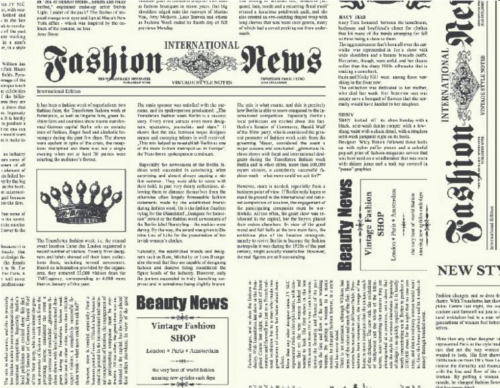

Classement de dépêches

Objectif :
Classification automatique de dépêches selon des catégories.
Description :
Ce projet avait pour objectif la classification automatique de dépêches dans des catégories prédéfinies (environnement-sciences, culture, économie, politique, sports) en utilisant un système de mots clés choisis manuellement puis générer automatiquement. Le rendu final se présentait sous la forme d’une démonstration de 10 minutes accompagner d’un rapport écrit en anglais synthétisant notre approche des différentes étapes de la réalisation. Réaliser en 5 jours commençant le lundi 15 janvier pour un rendu le vendredi 19 janvier, ce projet était à faire en binôme. Chaque dépêche avait déjà une catégorie associée (100 dépêches par catégorie) permettant la vérification de la classification. Tout d’abord, nous avons rédiger une liste de lexique par catégories attribuant un poids allant de 1 (peu représentatif) à 3 (très pertinent) aux mots présents dans les dépêches en fonction de leur pertinence. Ce qui nous a permis par la suite de calculer le score lexical par catégorie de chaque dépêche et ainsi de les classifier. Une fois classées, un fichier réponse affichant la catégorie associée à chaque dépêche devait être généré automatiquement. En comparant la catégorie attribuée par la classification et la catégorie renseignée dans le fichier de dépêches, un score indiquant un taux de réussite était affiché en pourcentage pour chaque catégorie. La deuxième partie du projet visait à améliorer cette classification en générant automatiquement des lexiques pour chaque catégorie en utilisant des algorithmes attribuant un poids à chaque mot des dépêches, créant ainsi un lexique. Enfin à l’image de la première partie, nous avons de nouveau générer un fichier de réponses qui n’était malheureusement pas plus précis que sa première itération. Ce projet a renforcé mes capacités en conception (coder, tester et intégrer) et m’a appris à respecter les exigences d’un client.
Compétences :
- Analyse de texte
- Poids lexical
- Algorithmes
Travail réalisé :
Projet réalisé en binôme
Mon rôle :
Conception des lexiques, génération automatique des résultats.
Apports personnels :
Amélioration de mes compétences en algorithmie, traitement de texte.